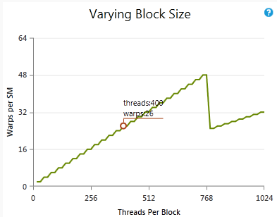
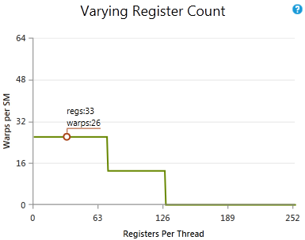
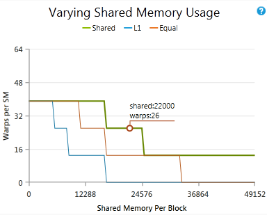
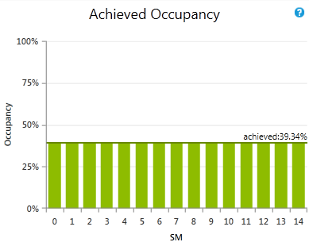

打开带导航的主题视图
概述
对于在 Profile 模式和 Trace 模式下记录的所有 CUDA kernel 启动，占用率实验详情面板会显示"理论占用率"，即由 kernel 启动配置和 CUDA 设备能力所决定的占用率上限。实际占用率 Profile 模式实验会测量 kernel 执行期间的占用率，并将实际值与理论值一同显示在占用率实验详情面板中。其他图表会显示每个 SM 的实际占用率，并说明如何通过调整编译器和启动参数来控制占用率。
背景
占用率的定义
CUDA C Programming Guide 说明了 CUDA 设备的硬件实现如何将一个 block 中相邻的线程组合成 warp。从 warp 中的线程开始执行起，直到 warp 中的所有线程都退出 kernel，该 warp 都被视为活跃。每个流多处理器（SM）上可并发活跃的 warp 数量存在上限，具体数值见 Programming Guide 的计算能力表。占用率被定义为 SM 上活跃 warp 数量与该 SM 所支持的最大活跃 warp 数量之比。占用率会随着 warp 的开始和结束而随时间变化，且每个 SM 上的占用率可能不同。
低占用率会导致较差的指令发射效率，因为没有足够的合格 warp 来隐藏依赖指令之间的延迟。当占用率已足够高以隐藏延迟时，继续提高占用率反而可能因每线程可用资源减少而降低性能。kernel 性能分析的早期步骤之一应该是检查占用率，并观察在不同占用率水平下运行时对 kernel 执行时间的影响。
理论占用率
活跃 warp 数量（也即占用率）存在一个上限，该上限可以从启动配置、kernel 的编译选项和设备能力推导出来。kernel 启动时的每个 block 会被分配到某个 SM 上执行。从 block 中的 warp 开始执行起，直到 block 中所有 warp 都退出 kernel，该 block 都被视为活跃。SM 上可并发执行的 block 数量受下面所列因素限制。活跃 warp 数量的上限等于活跃 block 数量上限与每个 block 中 warp 数量的乘积。因此，可以通过增加每个 block 中的 warp 数量（由 block 维度决定），或通过改变限制 SM 可容纳 block 数量的因素以允许更多活跃 block，来提高活跃 warp 数量的上限。限制因素如下：
- 每个 SM 的 warp 数
-
每个 SM 上可同时活跃的 warp 数量存在最大值。由于占用率是活跃 warp 数与所支持最大活跃 warp 数之比，因此当活跃 warp 数等于最大值时占用率为 100%。如果该因素正在限制活跃 block 数量，则无法继续提高占用率。例如，在一个每 SM 支持 64 个活跃 warp 的 GPU 上，8 个活跃 block、每个 block 含 256 个线程（每个 block 8 个 warp）会得到 64 个活跃 warp，理论占用率为 100%。同理，16 个活跃 block、每个 block 含 128 个线程（每个 block 4 个 warp）也会得到 64 个活跃 warp，理论占用率同样为 100%。
- 每个 SM 的 block 数
-
每个 SM 上可同时活跃的 block 数量存在最大值。如果占用率低于 100% 且该因素限制了活跃 block 数量，则意味着当达到设备的活跃 block 上限时，每个 block 中包含的 warp 不足以使占用率达到 100%。此时可通过增大 block 大小来提高占用率。例如，在一个每 SM 支持 16 个活跃 block 和 64 个活跃 warp 的 GPU 上，含 32 个线程（每个 block 1 个 warp）的 block 最多只能产生 16 个活跃 warp（理论占用率 25%），因为最多只能有 16 个活跃 block，每个 block 又只有一个 warp。在此 GPU 上，将 block 大小增加到每个 block 4 个 warp 就可以达到 100% 理论占用率。
- 每个 SM 的寄存器数
-
每个 SM 拥有一组由所有活跃线程共享的寄存器。如果该因素限制了活跃 block 数量，则意味着可以减少编译器为每个线程分配的寄存器数量来提高占用率（参见 __launch_bounds__）。在通过调整每线程寄存器数来控制占用率时，应仔细监控 kernel 执行时间和平均合格 warp 数。占用率提升带来的延迟隐藏收益，可能会被每线程寄存器变少、更频繁地向本地内存溢出所带来的性能损失抵消。占用率与每线程寄存器数之间的最佳性能平衡点，可以通过使用 __launch_bounds__ 控制每线程寄存器数、对不同寄存器数编译的 kernel 进行 trace 来通过实验找到。
- 每个 SM 的共享内存
-
每个 SM 拥有固定容量的共享内存，由所有活跃线程共享。如果该因素限制了活跃 block 数量，则意味着可以减少每个线程所需的共享内存来提高占用率。每线程的共享内存是"静态共享内存"（所有 __shared__ 变量所需的总大小）与"动态共享内存"（作为参数传递给 kernel 启动的共享内存量）之和。某些 CUDA 设备上，每个 SM 的共享内存大小是可配置的，可以在共享内存大小与 L1 缓存大小之间进行权衡。如果此类 GPU 被配置为使用更多 L1 缓存，而共享内存恰好是占用率的限制因素，那么也可以通过选择使用更少的 L1 缓存、更多的共享内存来提高占用率。
实际占用率
理论占用率给出了 SM 上活跃 warp 的上界，但实际活跃 warp 数量会随着 warp 的开始与结束在 kernel 执行期间发生变化。如发射效率中所述，一个 SM 包含一个或多个 warp 调度器。每个 warp 调度器都会尝试在每个时钟周期从某个 warp 发射指令。要充分隐藏依赖指令之间的延迟，每个调度器在每个时钟周期都必须有至少一个 warp 合格、可发射指令。在 kernel 整个执行过程中尽可能多地维持活跃 warp（即保持高占用率），有助于避免出现所有 warp 都停顿、没有指令被发射的情况。实际占用率是在每个 warp 调度器上使用硬件性能计数器、对该调度器上每个时钟周期的活跃 warp 数进行计数得到的。这些计数随后会跨每个 SM 的所有 warp 调度器累加，再除以该 SM 活跃的时钟周期数，从而得到每个 SM 的平均活跃 warp 数。再除以该 SM 所支持的最大活跃 warp 数，就得到 kernel 执行期间每个 SM 的平均实际占用率，并展示在实际占用率图表中。对所有 SM 求平均即得到整体实际占用率，该数值会与理论占用率一同显示在实验详情面板中。
实际占用率偏低的原因
实际占用率不可能超过理论占用率，所以提高占用率的第一步应该是通过调整限制因素来提高理论占用率。下一步是检查实际值是否接近理论值。当 SM 活跃期间未能始终维持理论上的活跃 warp 数时，实际值就会低于理论值。这种情况会在以下场景中发生：
- block 内部的负载不均衡
-
如果一个 block 中的各个 warp 执行时间不相同，则称该负载不均衡。这意味着在 kernel 接近结束时活跃 warp 数会减少，这就是所谓的"尾部效应"问题。最佳解决方案是尽量让每个 block 中各 warp 之间的负载更均衡。
- block 之间的负载不均衡
-
如果一个 grid 中的各个 block 执行时间不相同，这种负载同样是不均衡的，不过即使不将其改造为更均衡的负载，也能提高设备效率。启动更多 block 可以让某些 block 完成后立刻有新的 block 启动，意味着尾部效应不会出现在每个 block 内部，而只会出现在 kernel 末尾。如果没有更多 block 可启动，运行具有相似 block 属性的并发 kernel 也能达到同样效果。
- 启动的 block 数过少
-
每个 SM 的活跃 block 上限由理论占用率决定，但该计算并未考虑每 SM 启动 block 数不足该上限的情况。设备的 SM 数量乘以每 SM 最大活跃 block 数被称为"完整一波（full wave）"，启动量不足一波会导致实际占用率偏低。例如，在一个具有 15 个 SM、配置期望 100% 理论占用率且每 SM 4 个 block 的设备上，完整一波是 60 个 block。仅启动 45 个 block（假定负载均衡）会导致大约 75% 的实际占用率。
- 最后一波不完整
-
每个 SM 上可同时活跃的 warp 数量存在最大值。由于占用率是活跃 warp 数与所支持最大活跃 warp 数之比，因此当活跃 warp 数等于最大值时占用率为 100%。如果该因素正在限制活跃 block 数量，则无法继续提高占用率。例如，在一个每 SM 支持 64 个活跃 warp 的 GPU 上，8 个活跃 block、每个 block 含 256 个线程（每个 block 8 个 warp）会得到 64 个活跃 warp，理论占用率为 100%。同理，16 个活跃 block、每个 block 含 128 个线程（每个 block 4 个 warp）也会得到 64 个活跃 warp，理论占用率同样为 100%。
|

展示在其他参数保持不变的情况下，变动 block 大小如何影响理论占用率。圆圈标记点显示当前每个 block 的线程数和当前活跃 warp 上限。注意，活跃 warp 数并非每个 block 的 warp 数（后者是每 block 线程数除以 warp 大小并向上取整得到）。如果图表中的曲线高于圆圈，则说明在不改动其他因素的情况下，仅通过改变 block 大小就可以提高占用率。
|
|

展示在其他参数保持不变的情况下，变动寄存器数如何影响理论占用率。圆圈标记点显示当前每线程的寄存器数和当前活跃 warp 上限。如果图表中的曲线高于圆圈，则说明在不改动其他因素的情况下，仅通过改变每线程寄存器数就可以提高占用率。
|
|

展示在其他参数保持不变的情况下，变动共享内存用量如何影响理论占用率。圆圈标记点显示当前每个 block 的共享内存大小和当前活跃 warp 上限。如果图表中的曲线高于圆圈，则说明在不改动其他因素的情况下，仅通过改变每个 block 的共享内存大小就可以提高占用率。
|
|

每个 SM 的实际占用率。所报告的值是在 kernel 执行期间对所有 warp 调度器求平均得到的。横跨所有柱状条的那条线是平均值，对应于其他表格中所报告的实际占用率。
|
-
低占用率本身并不是问题，但通常会导致合格 warp 过少。如果 Warp 发射效率图表中"没有合格 warp"的周期占比较高 ……
-
……尽量在可能的情况下增加活跃 warp 数。在很多情况下，增加活跃 warp 数会带来更大的合格 warp 池。如果……
-
……理论占用率较低，则尝试优化 kernel 启动的执行配置，借助占用率表格找出哪些因素正在限制占用率。如果你受限于寄存器，也不要排除使用 launch bounds 来试验提高占用率，即使这会造成一定程度的寄存器溢出。
-
……实际占用率明显低于理论占用率，则检查指令统计实验中是否存在严重的负载不均衡或尾部效应。可行的策略包括：以更细粒度拆分 kernel grid，更均衡地将工作分配到各 block 之间，避免在单个 block、warp 或线程上汇集最终结果。
-
……流水线利用率实验显示某条特定流水线已被完全占满，则增加活跃 warp 不太可能带来更多合格 warp，因为所有新增的活跃 warp 都会因尝试访问已过载的流水线而停顿。这种情况下，可以尝试减少该流水线上的负载，或排查是否已达到目标硬件预期的性能峰值。
NVIDIA GameWorks Documentation Rev. 1.0.150630 ©2015. NVIDIA Corporation. All Rights Reserved.